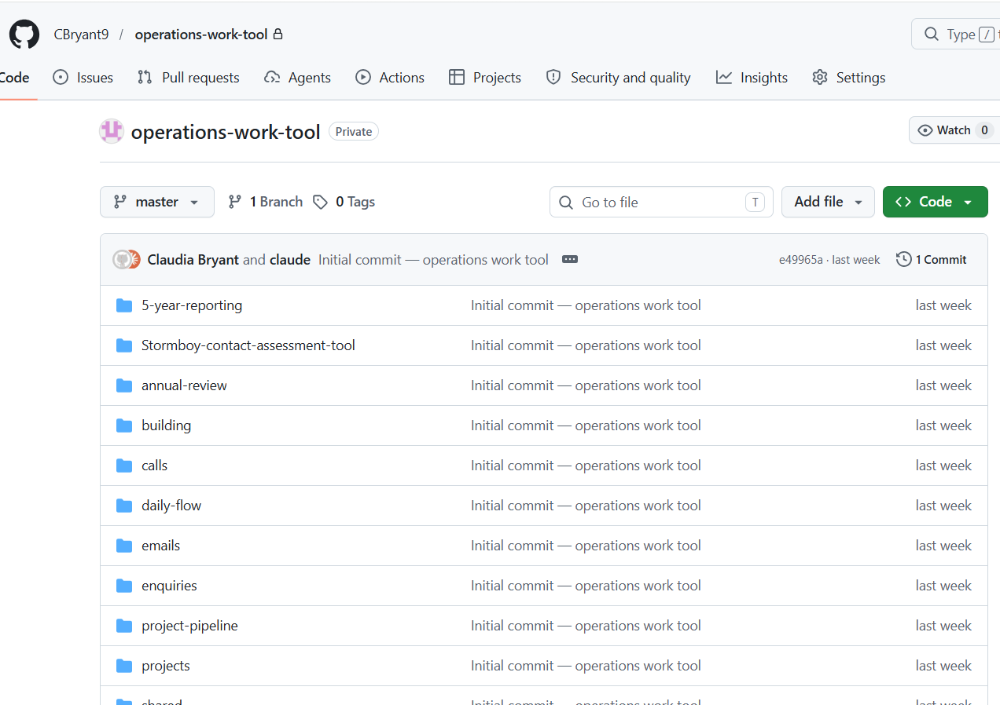

An AI operating layer rolling out across an 18-person ag tech startup. Runs the ops work staff used to eat whole days on, so the team can take on more projects, stay compliant, and grow without adding headcount.
All of my work is built for production or can't be shared due to IP issues, this project included. But here are the receipts showing that I am active and have this project in my git.

Lots of Admin. Not Enough Staff. Budget Constraints.
A layer above the tools the team already uses.
Reducing the admin burden so staff can focus on things that drive the business forwards.
Team members trigger agents in natural language. Each agent runs the set procedure, hits the integrations, and writes outputs back to the source of truth. Human-in-loop on anything that touches a customer.
Existing infrastructure. New way of working. Ops OS runs on top of the team's existing stack. No new platforms to learn. No migrations. Levels up how they work, without a steep learning curve.
Interpretable Context Methodology (ICM) is a highly effective, low-code approach to AI agent orchestration that favours simple, file-based structures over complex agent frameworks.
ops-os/ ├── CLAUDE.md ← Layer 1 · Instructions ├── workspaces/ │ ├── annual-review/ ← Layer 2 · Workspaces │ │ ├── CONTEXT.md │ │ ├── skills/ ← Layer 3 · Tools │ │ └── tools/ │ ├── lead-assessment/ │ │ ├── CONTEXT.md │ │ └── skills/ │ └── calls/ │ ├── CONTEXT.md │ └── skills/ └── shared/ ← Layer 4 · Shared knowledge ├── business-context.md ├── knowledge-map.md ├── user-preferences.md └── references/
Every agent procedure lives in core/skills/, shared across the whole team. Every user's personal work state lives in users/[name]/, isolated.
At session start, the agent runs get_user_details against HubSpot, identifies the active team member, and loads their queue and preferences before anything else.
Ship a skill improvement once. Everyone benefits. Personal queues stay personal. Zero version drift.
Reduced admin burden. Every project, every year.
| Admin time per month | Before | Now | Saved |
|---|---|---|---|
| Determining what needs reviewing | 3 hrs | 5 min | −2.9 hrs |
| Creating reports | 6 hrs | 30 min | −5.5 hrs |
| Filing & data entry | 6 hrs | 30 min | −5.5 hrs |
| Sending emails | 4 hrs | 15 min | −3.75 hrs |
| Live typing during calls (30 min × 30) | 15 hrs | 0 min | −15 hrs |
| Admin after calls (48 min × 30 → 45 min total) | 24 hrs | 45 min | −23.25 hrs |
| Total admin / month | ~58 hrs | ~2 hrs | −56 hrs |
How the agent took over the weekly lead pipeline so the team can stop researching and start calling.
25 leads each week → 4 hrs of research × 5 people fitting it in around other work = roughly 20 hours a week burned on research across the team.
Weekly list of 25 leads now takes ~20 minutes total and runs in the background. I do everyone's leads for them now, and sales momentum is picking up again.
How the agent keeps 595 projects visible, moving, and no one guessing at status.
Time consumed by tedious admin. Often faster to just do it yourself than use the AI.
The CRM has never been this tidy. Priorities are clear. Context is one question away. The team trusts the system and actually uses it.
A weekly cycle that turns every session, every correction, and every suggestion into improvements that actually ship.
Small additions that save individual team members time in their day.
The problem: 5-year project audits are legally required on every carbon project. Multi-step. Data-heavy. Involves chasing landholders, pulling bank statements, verifying compliance evidence, and reconciling paperwork across systems.
Under an ops team of five, these audits were slipping. Some projects overdue. Compliance exposure mounting.